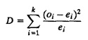
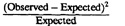

| Previous | Table of Contents | Next |
The man who does not read good books has no advantage
over the man who can’t read them.—Mark Twain
Analysts using a simulation should ensure that the random-number generator used in the model produces a sufficiently random stream. The very first step in testing any random-number or random-variate generation algorithm is to plot and look at the histogram and cumulative frequency distributions. Quantile-quantile plots discussed in Chapter 12 may also be used. These often reveal gross programming errors, if any, in the implementation. The next step is to use as many of the tests described here as possible. In general, passing each test is only a necessary condition, not a sufficient condition. That is, if a generator fails a test, we can assume that the generator is bad. However, passing a test is no guarantee that the generator is good. It may fail the next test or may fail the same test for a different seed or segment of the cycle. As new tests are being introduced continually, many random-number generators that were initially considered good are no longer considered good on the basis of the new tests.
Although the purpose of this chapter is to describe tests for random numbers distributed uniformly, most of the tests described here can also be used to test random variates, that is, random variables with distributions that are not uniform.
This is the most commonly used test to determine if an observed data set satisfies a specified distribution. The test is general and can be used for any distribution. It can be used for testing random numbers, that is, independently and identically distributed (IID) U(0, 1), as well as for testing random-variate generators.
A histogram of the observed data is prepared, and the observed frequencies are compared with those obtained from the specified density function. Suppose the histogram consists of k cells, and oi and ei are the observed and expected frequencies for the ith cell. Then the test consists of computing

For an exact fit, D should be zero. However, due to randomness, the D would be nonzero. It can be shown that D has a chi-square distribution with k—1 degrees of freedom. The null hypothesis that the observations come from the specified distribution cannot be rejected at a level of significance α if the computed D is less than the X2[1-α;k-1] read from Table A.5 in the Appendix.
xn = (125xn-1 + 1)mod(212)
| TABLE 27.1 Chi-Square Test on 1000 Number | |||
|---|---|---|---|
| Cell | Observed | Expected |  |
| 1 | 100 | 100.0 | 0.000 |
| 2 | 96 | 100.0 | 0.160 |
| 3 | 98 | 100.0 | 0.040 |
| 4 | 85 | 100.0 | 2.250 |
| 5 | 105 | 100.0 | 0.250 |
| 6 | 93 | 100.0 | 0.490 |
| 7 | 97 | 100.0 | 0.090 |
| 8 | 125 | 100.0 | 6.250 |
| 9 | 107 | 100.0 | 0.490 |
| 10 | 94 | 100.0 | 0.360 |
| Total | 1000 | 1000.0 | 10.380 |
The chi-square test is not limited to uniform number. It can be used for any distribution. Notice, however, that in the equation, ei appears in the denominator, and thus, errors in cells with a small ei affect the chi-square statistic more than the errors in cells with a large ei. The test works best when the cell sizes are chosen so that the expected probabilities ei are all equal. In other words, an equiprobable histogram with variable cell sizes should be used rather than an equal-cell histogram. In order to get equiprobable cells, the expected frequencies of adjoining cells are combined so that the new cell probabilities are approximately equal.
In Example 27.1, it was assumed that none of the parameters of the hypothesized distribution were estimated from the sample. If that is not the case, then the number of degrees of freedom for the chi-square statistic should be reduced to k - r - 1 (in place of k - 1), where r is the number of parameters estimated from the sample.
Strictly speaking, the chi-square test is designed for discrete distributions and for large sample sizes only. For continuous distributions, a chi-square test is only an approximation. The specified level of significance applies only if the number of observations is infinite (n → ∞). With finite samples, the level of significance is slightly less. In particular, if the sample size is so small that some cells contain less than five observations, then a few neighboring cells should be combined so that each cell has at least five observations.
| Previous | Table of Contents | Next |